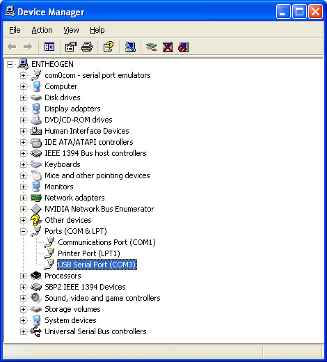

If you have an Arduino project where the dev board is stuck inside a machine, or attached to the rafters or is inaccessable in some other way, a wireless programming/debugging link will save you tons of time. This tutorial is an extension on Rob's version. In this tutorial, no extra firmware or hardware (other than a capacitor) is necessary. Just use the default bootloader. I use a 'classic' Arduino but of course this can be easily adapted to any version or clone.
You will need 2 XBee adapter kits, 2 matching-protocol XBee modules, an FTDI cable (or other FTDI breakout board, if you can wire it up correctly) as well as a 0.1uF ceramic capacitor, 10Kohm resistor and NPN transistor. The resistor and capacitor can vary quite a bit if you dont have exact values
Check out this diagram, can you tell I spent 5 minutes on it?
This tutorial was updated Feb 22, 2009 to make it more robust...it seems to work a lot better with the fixes!
PLEASE NOTE! These instructions are for the
Adafruit XBee adapter kit and the Series 1 XBees that are sold in the
Adafruit Shop. They may not work for ANY OTHER KIND OF XBEE OR ADAPTER
KIT!
One XBee will act as the 'reset transmitter', it will be attached to the computer via an FTDI cable and wireless send programming commands to the receiver. Lets set this one up first
Connect up the transmitter adapter with XBee modem to your computer using the FTDI cable
{kind=link}
And start X-CTU, just like on the configure page.
Once you've connected/tested that you can communicate with the modem, go to the configure tab and read in the current setup
Then set the following:
The PAN ID should be some 4 digit hex number that will only be used by these two modems - to prevent confusion

Set the baud rate to 19200 if you're using an Arduino with a 168 chip or older '328p chip. You can check your Arduino documentation to figure out which baud rate to use
Or 57600 if you're using a more recent Arduino with '328p chip
Next we'll set the Packetization Timeout. This is what determines how long to wait before sending the characters over. We're doing some 'bulk transfer' when sending 10K programs over, so you'll probably want this number high like 10
Set pin D3 to be a digital input
And set the Digital IO change detect to FF. Technically you can set it to 0x08, which is the mask to listen for only D3 but this certainly works fine.
Now the transmitter is set up to send the current status of pin D3 to any listening modems.
Now solder in a tiny jumper between the RTS pin and D3. This will tie the status of D3 to the status of the RTS pin which is can be configured to be used as the 'arduino reset pin'
{kind=link}
Finally setup the FTDI cable so that the RTS pin will reset the Arduino. For Mac/Linux it will already be done but if you're using Windows you'll need to make a slight change to the driver preferences. In the Device Manager, select the USB COM port

Then right click and select Properties
Click on the Port Settings tab, and click on Advanced...
Make sure Set RTS On Close is selected. Click OK.
Now we will set up the other XBee so that it will listen to changes on pin D3. Connect it to the FTDI cable and read in the current configuration just like the first one.
The PAN ID should match the transmitter's
Set the baud rate to 19200 or 57600 to match the transmitter, again
OR
Next we'll set the Packetization Timeout. This is what determines how long to wait before sending the characters over. We're doing some 'bulk transfer' when sending 10K programs over, so you'll probably want this number high like 10
Set pin D3 to be a digital output, default high.
Set the I/O Output to Disabled. This will prevent the receiver from displaying the status update in the serial line and instead just toggle the matching pin.
Finally, set I/O line passing input address to FFFF. If you set up unique addresses for the receiver and transmitter xbees, of course you should change this to match but FFFF will match all addresses.
Now write the changes to the receiver XBee.
The transmitter XBee connects directly to the FTDI cable/computer and the receiver is wired to the target Arduino. Here I use a half-sized breadboard and rubber band since not much space is necessary. Solder a wire from pin D3 on the receiver XBee adapter, so that you can plug it into the breadboard. This is the mirrored reset line from the transmitter Xbee.
{kind=link}
Xbee's are pretty weak and dont have the oomph to reset an Arduino on their own, so we need to wire it up to a transistor which will do the heavy lifting of pulling the reset line down. Pretty much any small NPN transistor will work just fine here. Put a 0.01uF to 0.1uF capacitor in series with the wire from the XBee, and connect the other side to the NPN transistor base. The emitter of the transistor connects to ground. Put a resistor around 10K between the base and emitter. This will pull down the base to keep the Arduino from resetting accidentally.
{kind=link}
The collector then goes the Arduino's reset line. Make sure the grounds are all connected, and that the XBee is wired from the Arduino's 5V line
{kind=link}
Now power the Arduino either through the USB cable or from a DC supply. That's it! Now you can reprogram it and also watch the serial monitor from more than 100 feet away. Don't forget the serial monitor -must- be at the same baud rate as programming because the XBees can only talk at their configured baud rate.You can also use AVRdude 'out of the box' which I prefer because you get a nice little progress bar. Simply go to the directory where your sketch is stored and look for the .hex file in the applet subfolder